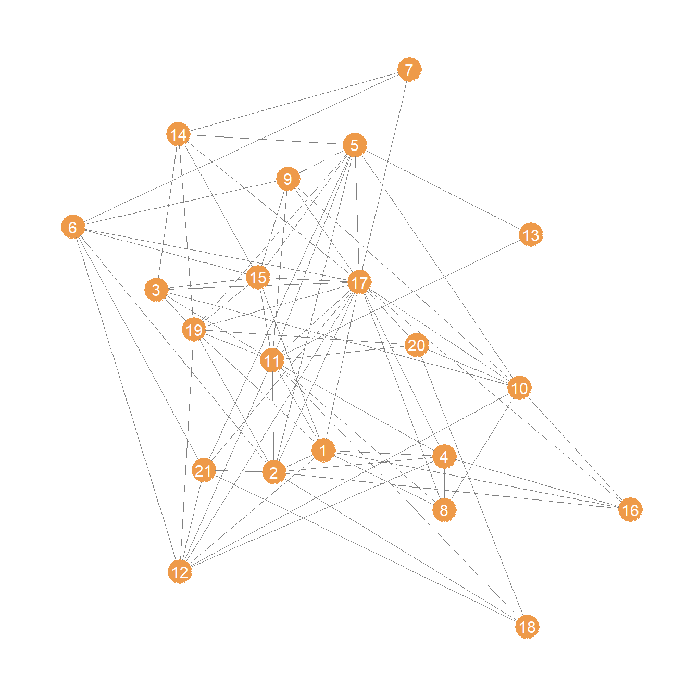

Status and Prestige
In the last handout, we saw how to compute the most popular centrality measures. Freeman’s “big three” have strong graph-theoretic foundation and do a good job of formalizing and quantifying the idea that a node is central if it is “well-placed” in the network, where being well-placed resolves into either being able to reach others (directly as with degree or indirectly as with closeness) or being able to intermediate between others (as with betweenness).
There is, however, another strong and well-motivated intuition as to what it means to be “well-placed” in a network. Here the ties in the network are seen less as “pipes” that transmit stuff and more like “prisms” that reflect on you (Podolny 2001). Another way of thinking about this second version of well-placedness is that what is transmitted through the network is the network itself, or more accurately, the importance, status, and prestige of the people you are connected to.
Under this interpretation, actors get status and prestige in the network from being connected to prestigious and high status others. Those others, in turn, get their status from being connected to high status others, and so ad infinitum.
One way of quantifying this idea goes like this. If \(\mathbf{x}\) is a vector containing the desired status scores, then the status of each actor should be equal to:
\[ x_i = \sum_{j} a_{ij}x_j \tag{1}\]
Where \(a_{ij} = 1\) if \(i\) is adjacent to \(j\) in the network. Note that this formula just sums up the status scores of all the others each actor is connected to.
In matrix notation, if \(\mathbf{x}\) is a column vector of status scores then:
\[ \mathbf{x} = A\mathbf{x} \]
Because \(\mathbf{x}\) is an \(n \times n\) matrix and \(\mathbf{x}\) is \(n \times 1\) column vector, the multiplication \(A\mathbf{x}\) will return another column vector of dimensions \(n \times 1\), in this case \(\mathbf{x}\) itself!
Note the problem that this formulation poses: \(\mathbf{x}\) appears on both sides of the equation, which means that in order to know the status of any one node we would need to know the status of the others, but calculating the status of the others depends on knowing the status of the focal node, and so on. There’s a chicken and the egg problem here.
Now, there is an obvious (to the math majors) mathematical solution to this problem, because there’s a class of solvable (under some mild conditions imposed on the matrix \(\mathbf{A}\)) linear algebra problems that take the form:
\[ \lambda\mathbf{x} = A\mathbf{x} \]
Where \(\lambda\) is just a plain old number (a scalar). Once again under some very mild conditions we can search for a value \(\lambda\) while also filling up the \(\mathbf{x}\) with another set of values until we find some that make the above equality true.
When we do that successfully, we say that the value of \(\lambda\) we hit upon is an eigenvalue of the matrix \(\mathbf{A}\) and the values we put in the vector \(\mathbf{x}\) are an eigenvector of the same matrix (technically in the above equation a right eigenvector).
Eigenvalues and eigenvectors, like Don Quixote and Sancho Panza, come in pairs, because you need a unique combination of both to solve the equation. Typically, a given matrix (like an adjacency matrix) will have multiple \(\lambda/\mathbf{x}\) pairs that will solve the equation. Together the whole set \(\lambda/\mathbf{x}\) pairs that make the equation true are the eigenvalues and eigenvectors of the matrix.
Note that all of this obscure talk about eigenvalues and eigenvectors is just matrix math stuff. It has nothing to do with networks and social structure. In contrast, because the big three centrality measures have a direct foundation in graph theory, and graph theory is an isomorphic model of social structures (points map to actor and lines map to relations) the “math” we do with graph theory is directly meaningful as a model of networks (the counts of the number of edges incident to a node is the count of other actors they someone is directly connected to).
Eigenvalues and eigenvectors are not a model of social structure in the way graph theory is (their first scientific application was in Physics). They are just a mechanical math fix to a circular equation problem.
This is why it’s a mistake to introduce network measures of status and prestige by jumping directly to the machinery of linear algebra (or worse talk about the idea of eigenvector centrality which means nothing to most people).
A better approach is to see if we can motivate the use of measures like the ones above using the simple model of the distribution of status and prestige we started with earlier. We will see that we can, and that doing that leads us back to solutions that are the mathematical equivalent of all the eigenvector stuff.
Distributing Centrality to Others
Let’s start with the simplest model of how people can get their status from the status of others in a network. It is the simplest because it is based on degree. Imagine everyone has the same “quantum” of status to begin with (this can be stored in a vector containing the same number of length equals to number of actors in the network). Then, at each step, people “send” the same amount of status to all their alters in the network. At the end of each step, we compute people’s status scores using Equation 1. They stop doing this after the status scores of people stop changing.
Let us see a real-life example at work.
We will use a data set collected by David Krackhardt on the friendships of 21 managers in a high tech company in the West coast. The data are reported as directed ties (\(i\) nominates \(j\) as a friend) but we will constrain ties to be undirected:
This is what the network looks like:

We extract the adjacency matrix corresponding to this network:
And here’s a simple custom function using a while loop that exemplifies the process of status distribution through the network we talked about earlier:
status1 <- function(A) {
n <- nrow(A) #number of actors
x <- rep(1, n) #initial status vector set to all ones
w <- 1
k <- 0 #initializing counter
while (w > 0.0001) {
o.x <- x #old status scores
x <- A %*% x #new scores a function of old scores and adjacency matrix
x <- x/norm(x, type = "E") #normalizing new status scores
w <- abs(sum(abs(x) - abs(o.x))) #diff. between new and old scores
k <- k + 1 #incrementing while counter
}
return(as.vector(x))
}Lines 1-5 initialize various quantities, most importantly the initial status vector for each node to just a series of ones:
Then lines 6-12 implement a little loop of how status is distributed through the network, with the most important piece of code being line 8 where the new status scores for each node are just a function of the of the sum of the scores of its neighbors. The program stops when the difference between the old and the new scores is negligible as checked in line 10.
Note the normalization step on line 9, which is necessary to prevent the sum of status scores from getting bigger and bigger indefinitely. The type = "E" normalization is called the euclidean vector norm, which we divide each value of the status scores by. For a vector of numbers \(\mathbf{x}\) the euclidean vector norm \(||\mathbf{x}||_2\) is given by: \(\sqrt{\sum x^2}\). So we divide each status scores by the square root of the sum of all the squared scores.
And here’s the resulting (row) vector of status scores for each node:
[1] 0.256 0.262 0.184 0.202 0.260 0.178 0.085 0.157 0.183 0.193 0.336 0.227
[13] 0.067 0.165 0.253 0.149 0.413 0.102 0.281 0.149 0.162What if I told you that this vector is the same as that given by the leading (first) eigenvector of the adjacency matrix?
[1] 0.256 0.262 0.184 0.202 0.260 0.178 0.085 0.157 0.183 0.193 0.336 0.227
[13] 0.067 0.165 0.253 0.149 0.413 0.102 0.281 0.149 0.162Which is of course what is computed by the eigen_centrality function in igraph:
[1] 0.256 0.262 0.184 0.202 0.260 0.178 0.085 0.157 0.183 0.193 0.336 0.227
[13] 0.067 0.165 0.253 0.149 0.413 0.102 0.281 0.149 0.162So, the eigenvector centralities are just the limit scores produced by the status distribution process implemented in the status1 function!
Most other measures of status in networks are constructed using similar principles. What changes is the model of how status is distributed in the system. Other measures are constructed such that they differentiate between different routes of distribution in directed graphs, by for instance, differentiating status derived from outgoing links from that derived from incoming links.
Let’s see some other examples.
A Distributional Model of Status
Note that the model of status distribution implied by the traditional eigenvector centrality implies that each node distributes the same amount of status independently of the number of connection it has; status just replicates. Thus, a node with a 100 friends has 100 status units to distribute to each of them and a node with a 10 friends has 10 units.
This is why the eigenvector idea rewards nodes who are connected to popular others more. Even though everyone begins with a single unit of status, well-connected nodes by degree end up having more of it to distribute.
But what if status dissipated proportionately to the number of connections one had? In that case the node with a hundred friend would only have 1/100 of status unites to distribute to each of their connections while the node with 10 friends would have 1/10 units. Under this model, being connected to discerning others, that is people who only connect to a few, is better than being connected to others who connect to everyone else indiscriminately.
How would we implement this model? First, let’s create a variation of the adjacency matrix called the \(\mathbf{P}\) matrix:
So this is the original adjacency matrix, with each entry \(a_{ij}\) divided by the sum of the corresponding row, equivalent to the degree of node \(i\).
Here are the first 10 rows and columns of the new matrix:
[,1] [,2] [,3] [,4] [,5] [,6] [,7] [,8] [,9] [,10]
[1,] 0.00 0.11 0.00 0.11 0.00 0.00 0.00 0.11 0.00 0.00
[2,] 0.10 0.00 0.00 0.10 0.10 0.10 0.00 0.00 0.00 0.00
[3,] 0.00 0.00 0.00 0.00 0.00 0.00 0.00 0.00 0.00 0.17
[4,] 0.14 0.14 0.00 0.00 0.00 0.00 0.00 0.14 0.00 0.00
[5,] 0.00 0.10 0.00 0.00 0.00 0.00 0.00 0.00 0.10 0.10
[6,] 0.00 0.14 0.00 0.00 0.00 0.00 0.14 0.00 0.14 0.00
[7,] 0.00 0.00 0.00 0.00 0.00 0.33 0.00 0.00 0.00 0.00
[8,] 0.20 0.00 0.00 0.20 0.00 0.00 0.00 0.00 0.00 0.20
[9,] 0.00 0.00 0.00 0.00 0.17 0.17 0.00 0.00 0.00 0.17
[10,] 0.00 0.00 0.12 0.00 0.12 0.00 0.00 0.12 0.12 0.00Note that the entries are now numbers between zero and one and the matrix is asymmetric that is \(p_{ij}\) is not necessarily equal to \(p_{ji}\). In fact \(p_{ij}\) will only be equal to \(p_{ji}\) when \(k_i = k_j\) (nodes have the same degree).
Moreover the rows of \(\mathbf{P}\) sum to one:
Which means that the \(\mathbf{P}\) matrix is row stochastic. That is the “outdegree” of each node in the matrix is forced to sum to a fixed number (which means that it is a useless quantity). However, the indegree is not:
[1] 1.11 1.34 0.63 0.86 1.56 1.06 0.37 0.51 0.61 1.21 2.33 0.92 0.17 0.87 1.08
[16] 0.53 2.73 0.54 1.21 0.60 0.77Which means that inequalities in the system will be tied to the indegree of each node in the \(\mathbf{P}\) matrix. This matrix has many interpretations, but here it just quantifies the idea that the amount of centrality each node can distribute is proportional to their degree, and that the larger the degree, the less there is to distribute (the smaller each cell \(p_{ij}\) will be). Meanwhile, it is clear that nodes that are pointed to by nodes that don’t point to many others have a large indegree in \(\mathbf{P}\).
Now we can just write function implementing the model of status distribution we used for eigenvector centrality but this time using the \(\mathbf{P}\) rather than the \(\mathbf{A}\) matrix. Note that because we interested in the status that comes into each node we use the transpose of \(\mathbf{P}\) rather than \(\mathbf{P}\). So at each step the status of a node is equivalent to the sum of the status scores of their in-neighbors, with more discerning in-neighbors passing along more status than less discerning ones:
[1] 0.236 0.262 0.157 0.183 0.262 0.183 0.079 0.131 0.157 0.210 0.367 0.210
[13] 0.052 0.157 0.236 0.131 0.472 0.105 0.262 0.131 0.157What if I told you that these numbers are the same as the leading eigenvector of \(\mathbf{P}^T\)?
[1] 0.236 0.262 0.157 0.183 0.262 0.183 0.079 0.131 0.157 0.210 0.367 0.210
[13] 0.052 0.157 0.236 0.131 0.472 0.105 0.262 0.131 0.157The (normalized) scores produced by this approach are identical to those computed by the page_rank function in igraph:
[1] 0.500 0.556 0.333 0.389 0.556 0.389 0.167 0.278 0.333 0.444 0.778 0.444
[13] 0.111 0.333 0.500 0.278 1.000 0.222 0.556 0.278 0.333 [1] 0.500 0.556 0.333 0.389 0.556 0.389 0.167 0.278 0.333 0.444 0.778 0.444
[13] 0.111 0.333 0.500 0.278 1.000 0.222 0.556 0.278 0.333So the distributional model of status is the same one implemented in the PageRank algorithm!
PageRank of course was designed to deal with directed graphs (like the World Wide Web). So let’s load up the version of the Krackhardt’s Managers data that contains the advice network which is an unambiguously directed relation.
We then compute the \(\mathbf{P}\) matrix:
[,1] [,2] [,3] [,4] [,5] [,6] [,7] [,8] [,9] [,10] [,11] [,12] [,13]
[1,] 0.00 0.17 0.00 0.17 0.00 0.00 0.00 0.17 0.00 0.00 0.00 0.00 0.00
[2,] 0.00 0.00 0.00 0.00 0.00 0.33 0.33 0.00 0.00 0.00 0.00 0.00 0.00
[3,] 0.07 0.07 0.00 0.07 0.00 0.07 0.07 0.07 0.07 0.07 0.07 0.07 0.00
[4,] 0.08 0.08 0.00 0.00 0.00 0.08 0.00 0.08 0.00 0.08 0.08 0.08 0.00
[5,] 0.07 0.07 0.00 0.00 0.00 0.07 0.07 0.07 0.00 0.07 0.07 0.00 0.07
[6,] 0.00 0.00 0.00 0.00 0.00 0.00 0.00 0.00 0.00 0.00 0.00 0.00 0.00
[7,] 0.00 0.12 0.00 0.00 0.00 0.12 0.00 0.00 0.00 0.00 0.12 0.12 0.00
[8,] 0.00 0.12 0.00 0.12 0.00 0.12 0.12 0.00 0.00 0.12 0.12 0.00 0.00
[9,] 0.08 0.08 0.00 0.00 0.00 0.08 0.08 0.08 0.00 0.08 0.08 0.08 0.00
[10,] 0.07 0.07 0.07 0.07 0.07 0.00 0.00 0.07 0.00 0.00 0.07 0.00 0.07
[11,] 0.33 0.33 0.00 0.00 0.00 0.00 0.33 0.00 0.00 0.00 0.00 0.00 0.00
[12,] 0.00 0.00 0.00 0.00 0.00 0.00 0.50 0.00 0.00 0.00 0.00 0.00 0.00
[13,] 0.17 0.17 0.00 0.00 0.17 0.00 0.00 0.00 0.17 0.00 0.00 0.00 0.00
[14,] 0.00 0.25 0.00 0.00 0.00 0.00 0.25 0.00 0.00 0.00 0.00 0.00 0.00
[15,] 0.05 0.05 0.05 0.05 0.05 0.05 0.05 0.05 0.05 0.05 0.05 0.05 0.05
[16,] 0.25 0.25 0.00 0.00 0.00 0.00 0.00 0.00 0.00 0.25 0.00 0.00 0.00
[17,] 0.20 0.20 0.00 0.20 0.00 0.00 0.20 0.00 0.00 0.00 0.00 0.00 0.00
[18,] 0.06 0.06 0.06 0.06 0.06 0.00 0.06 0.06 0.06 0.06 0.06 0.00 0.06
[19,] 0.09 0.09 0.09 0.00 0.09 0.00 0.09 0.00 0.00 0.09 0.09 0.00 0.00
[20,] 0.08 0.08 0.00 0.00 0.00 0.08 0.00 0.08 0.00 0.00 0.08 0.08 0.00
[21,] 0.00 0.09 0.09 0.09 0.00 0.09 0.09 0.09 0.00 0.00 0.00 0.09 0.00
[,14] [,15] [,16] [,17] [,18] [,19] [,20] [,21]
[1,] 0.00 0.00 0.17 0.00 0.17 0.00 0.00 0.17
[2,] 0.00 0.00 0.00 0.00 0.00 0.00 0.00 0.33
[3,] 0.07 0.00 0.00 0.07 0.07 0.00 0.07 0.07
[4,] 0.00 0.00 0.08 0.08 0.08 0.00 0.08 0.08
[5,] 0.07 0.00 0.07 0.07 0.07 0.07 0.07 0.07
[6,] 0.00 0.00 0.00 0.00 0.00 0.00 0.00 1.00
[7,] 0.12 0.00 0.00 0.12 0.12 0.00 0.00 0.12
[8,] 0.00 0.00 0.00 0.00 0.12 0.00 0.00 0.12
[9,] 0.08 0.00 0.08 0.08 0.08 0.00 0.00 0.08
[10,] 0.00 0.07 0.07 0.07 0.07 0.07 0.07 0.00
[11,] 0.00 0.00 0.00 0.00 0.00 0.00 0.00 0.00
[12,] 0.00 0.00 0.00 0.00 0.00 0.00 0.00 0.50
[13,] 0.17 0.00 0.00 0.00 0.17 0.00 0.00 0.00
[14,] 0.00 0.00 0.00 0.00 0.25 0.00 0.00 0.25
[15,] 0.05 0.00 0.05 0.05 0.05 0.05 0.05 0.05
[16,] 0.00 0.00 0.00 0.00 0.25 0.00 0.00 0.00
[17,] 0.00 0.00 0.00 0.00 0.00 0.00 0.00 0.20
[18,] 0.06 0.06 0.06 0.00 0.00 0.06 0.06 0.06
[19,] 0.09 0.09 0.00 0.00 0.09 0.00 0.09 0.00
[20,] 0.08 0.08 0.08 0.08 0.08 0.00 0.00 0.08
[21,] 0.09 0.00 0.00 0.09 0.09 0.00 0.09 0.00Another way of thinking about the \(\mathbf{P}\) is as characterizing the behavior of a random walker in the directed graph. At any time point \(t\) the walker sits on a node and the with probability \(p_{ij}\) it jumps to one of that node’s out-neighbors. The probabilities are stored in the matrix \(\mathbf{P}\).
One issue that arises is that there could be nodes with no out-neighbors (so-called sink nodes) or like node 6 in the above matrix nodes, with just one out-neighbor, in which case the probability is 1.0 that if the random walker is a node 6 it will go to node 21.
To avoid this issue the original designers of the PageRank algorithm (Brinn and Page) added a “fudge” factor: That is, with probability \(\alpha\) the random walker should hop from node to node following the directed links in the graph. But once in a while with probability \(1-\alpha\) the walker should decide to “teleport” (with uniform probability) to any node in the graph.
How do we do that? Well we need to “fix” the \(\mathbf{P}\) to allow for such behavior. So instead of \(\mathbf{P}\) we estimate our distributive status model on the matrix \(\mathbf{G}\) (yes, for Google):
\[ \mathbf{G} = \alpha \mathbf{P} + (1 - \alpha) \mathbf{E} \]
Where \(\mathbf{E}\) is a matrix of the same dimension as \(\mathbf{P}\) but containing \(1/n\) in every cell indicating that every node has an equal chance of being teleported to.
So fixing \(\alpha = 0.85\) our \(\mathbf{G}\) matrix would be:
And then we just play our status distribution game on the transpose of \(\mathbf{G}\):
[1] 0.302 0.573 0.165 0.282 0.100 0.437 0.635 0.255 0.092 0.180 0.237 0.242
[13] 0.087 0.268 0.097 0.170 0.258 0.440 0.087 0.200 1.000Which is the same answer you would get from the igraph function page_rank by setting the “damping” parameter to 0.85: